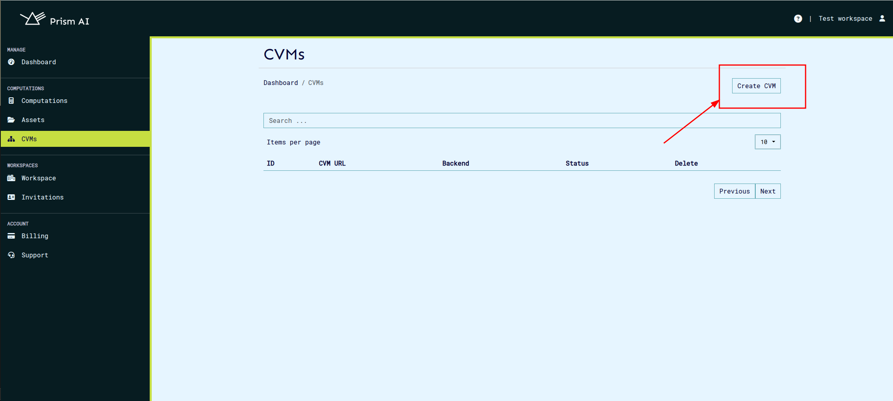
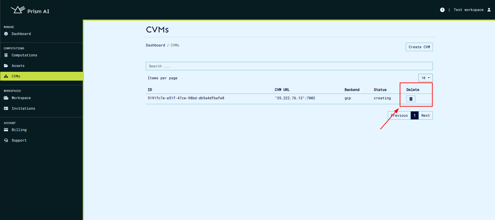

Confidential Virtual Machines (CVMs)#
Overview#
Confidential Virtual Machines (CVMs) provide a secure environment for running computations while ensuring data confidentiality. CVMs are available in multiple configurations, allowing users to select a flavor that best suits their needs. The currently supported flavors include:
- GCP: Confidential Virtual Machines hosted on Google Cloud Platform.
- Azure: Confidential Virtual Machines deployed on Microsoft Azure.
- Manager: Confidential Virtual Machines running on our dedicated cloud infrastructure.
Before computations can be executed, a CVM must be created and properly configured. Once set up, it can be selected for running workloads securely.
Confidential Computing Virtual Machines (CVM) Configurations#
-
GCP CVMs run on the N2D machine series, powered by AMD EPYC Milan processors with up to 224 vCPUs and 896 GB RAM. These instances leverage SEV-SNP for memory encryption, ensuring data remains confidential even from the hypervisor. They support persistent and local SSD storage, but GPUs and nested virtualization are not available. GCP CVMs offer Secure Boot, vTPM, and integrity monitoring, enhancing firmware security and trusted execution. They run Ubuntu 22.04 LTS and can be provisioned using cloud-init for automated configuration. The VMs require on-host maintenance termination, ensuring workloads remain secure during infrastructure updates.
-
Azure CVMs utilize the DCasv5 series, featuring AMD EPYC 7763v (Milan) processors with up to 96 vCPUs and 384 GB RAM. These machines incorporate SEV-SNP for full memory encryption and hardware-isolated execution. They support Premium SSD storage but lack local disks, making them ideal for workloads requiring strict security without temporary storage dependencies. Azure CVMs also include vTPM and Secure Boot, enhancing firmware integrity and trusted execution. The VMs run Canonical's Ubuntu Confidential VM (20.04 LTS) and can be provisioned using cloud-init for automated configuration.
-
Manager spawns QEMU-based secure virtual machines (SVMs) configured for confidential computing and built using Buildroot. It runs on a Q35 machine type with an AMD EPYC CPU, supporting 8 vCPUs (scalable up to 64) and 16 GB RAM (maximum 30 GB). The VM uses AMD SEV-SNP for full memory encryption and is booted with Open Virtual Machine Firmware (OVMF) for UEFI. It runs focal-server-cloudimg-amd64 and leverages a RAM-only architecture based on Linux kernel v6.12 with an initramfs root file system, ensuring that secrets stored in memory are destroyed upon shutdown.
-
Manager integrates a Hardware Abstraction Layer (HAL) with AMD SEV-SNP to create fully encrypted VMs that can be verified using remote attestation. SEV-SNP protects the entire VM, while HAL eliminates the need for a full OS by providing a lightweight execution environment that abstracts hardware complexities.
-
During boot, Manager ensures system integrity using remote attestation. The AMD Secure Processor (AMD SP) measures the VM’s contents and includes the hash in the attestation report. Since SEV alone only measures the OVMF firmware, Manager extends attestation by embedding hashes of vmlinuz and initramfs inside OVMF. At boot, OVMF verifies these hashes before loading the kernel and file system into memory, ensuring that only the expected and trusted software stack executes.
-
Manager includes a virtual TPM (vTPM) within the CVM, measured and attested by AMD SEV-SNP. After boot, the vTPM functions as a standard TPM, measuring the boot process, including the kernel and initial file system, to ensure system integrity.
-
More information on manager can be found on manager docs.
Creating a CVM#
To create a CVM, follow these steps:
-
Navigate to the CVMs Section:
-
From the dashboard, click on the CVMs tab to access the CVM management page.

-
Initiate CVM Creation:
-
Click the Create CVM button to begin the setup process.

-
Select Configuration Options:
-
From the dropdown menu, choose the desired CVM flavor (GCP, Azure, or Manager).
- Specify the amount of RAM (required for Azure and GCP CVMs).
- Define the vCPU count (configurable for Azure and GCP CVMs only).

-
CVM Provisioning:
-
After submitting the configuration, the CVM creation process will begin. This may take a few minutes.
- Once created, the CVM will appear in the list with its unique ID, URL, and status.
Viewing CVM Details & Managing Certificates#
Each CVM is initialized with default certificates that are used to verify secure communication between the CVM agent and Prism. To view or manage a CVM’s certificates:
-
Access the CVM Details Page:
-
Navigate to the CVM list.
- Click on the CVM ID to open its details page.

-
Manage Certificates:
-
Download Certificates: Retrieve the default certificates for verification and secure connections.
- Revoke Certificates: Invalidate compromised or outdated certificates.
- Renew Certificates: Extend the validity of existing certificates.
- Issue New Certificates: Generate additional certificates as needed.
Note: Default certificates are automatically loaded into the CVM during creation. Any newly issued certificates must be manually transferred to the CVM for use.
Removing a CVM#
If a CVM is no longer needed, it can be removed using the following steps:
-
Navigate to the CVM List:
-
Open the CVMs page.
-
Initiate Removal:
-
Click the Delete button next to the CVM you want to remove.

- CVM Deactivation:
- The CVM’s status will change to Inactive upon removal.
Additional Notes#
- CVMs provide an extra layer of security by ensuring that computations occur in a protected execution environment.
- Once a CVM is removed, its resources are deallocated, and it cannot be recovered.
- For Azure and GCP CVMs, compute resources should be selected carefully based on workload requirements to optimize cost and performance.
- Regularly update certificates to maintain secure connections.
By following these guidelines, users can efficiently manage their Confidential Virtual Machines while maintaining a high level of security and performance.